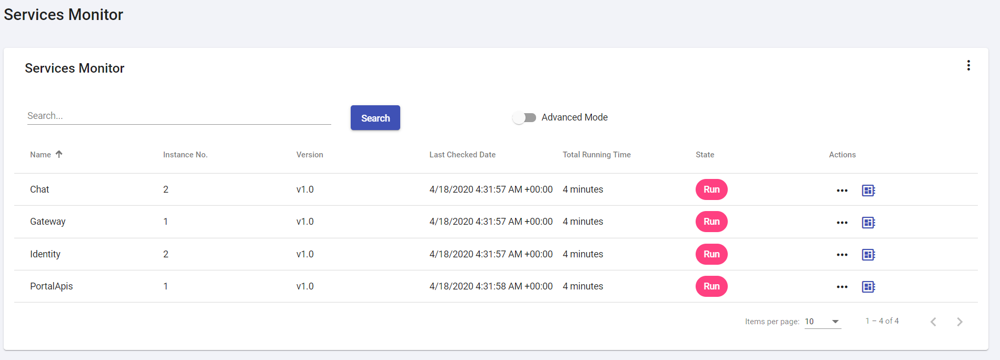
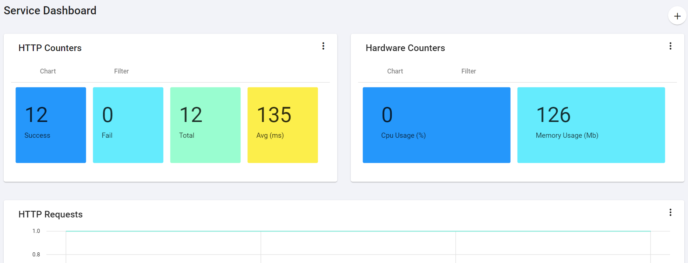

Service Monitor
The documentation applies to: v0.8.0
v0.8.0
Enable Monitor¶
First, you need to enable in ConfigureServices method in Startup.cs
services.AddLetPortal(Configuration, options =>
{
options.EnableMicroservices = true;
options.EnableServiceMonitor = true;
})
Second, you need to add UseLetPortalMonitor in Configure method in Startup.cs
// Change Configure method with three parameters
public static void Configure(IApplicationBuilder app, IWebHostEnvironment env, IHostApplicationLifetime appLifetime)
{
app.UseLetPortalMonitor(appLifetime);
app.UseRouting();
}
Third, you need to enable monitor and notify in MonitorOptions.
"MonitorOptions": {
"Enable": true, // Enable to track HeartBeat
"NotifyOptions": {
"Enable": true // Enable to send HeartBeat to Service Management
}
}
Monitor UI¶
You can open LET Portal, go to Service Monitor page

Then you can click on Dashboard icon to redirect to Monitor Dashboard page
